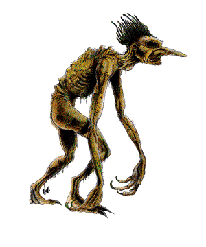
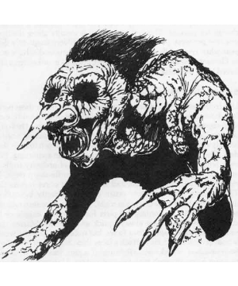
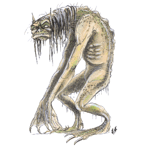
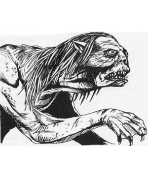

2102 • 2140
| Troll | Two-headed | Freshwater Scrag | Saltwater Scrag | Desert | Spectral | Giant | Ice | |
|---|---|---|---|---|---|---|---|---|
| Climate/Terrain: | Any land | Any land | Lakes/rivers | Any coast | Any desert | Any forest | Any land | Arctic |
| Frequency: | Uncommon | Very rare | Rare | Uncommon | Rare | Very rare | Rare | Rare |
| Organization: | Group | Group | Group | Group | Solitary | Solitary | Tribe | Tribe |
| Activity Cycle: | Night | Any | Day | Night | Any | Night | Any | Any |
| Diet: | Carnivore | Carnivore | Carnivore | Carnivore | Carnivore | Carnivore | Carnivore | Carnivore |
| Intelligence: | Low (5-7) | Average (8-10) | Low (5-7) | Low (5-7) | Average (8-10) | Very (11-12) | Low (5-7) | Average (8-10) |
| Treasure: | Q (D) | Q (D) | Q×4 (C) | (D) | C | C | C | Q (D) |
| Alignment: | Chaotic evil | Chaotic evil | Chaotic evil | Chaotic evil | Chaotic evil | Chaotic evil | Chaotic evil | Chaotic evil |
| No. Appearing: | 1-12 | 1-3 | 1-6 | 1-8 | 1 (10% 1-6) | 1 | 1-12 | 2-12 |
| Armor Class: | 4 | 4 | 3 | 2 | 4 | 0 | 4 | 8 |
| Movement: | 12 | 12 | 3, Sw 12 | 3, Sw 12 | 12 | 12 | 12 | 9 |
| Hit Dice: | 6+6 | 10 | 5+5 | 6+12 | 7+7 | 8 | 8 | 2 |
| THAC0: | 13 | 11 | 15 | 13 | 13 | 13 | 13 | 19 |
| No. of Attacks: | 3 | 4 | 3 | 3 | 3 | 3 | 1 weapon | 2 |
| Damage/Attack: | 5-8/5-8/5-12 | 5-8/5-8/1-12/1-12 | 2-5/2-5/3-12 | 1-4/1-4/9-16 | 3-6/2-6/3-10 | 3-6/3-6/3-10 | 2d6+7 | 1-8/1-8 |
| Special Attacks: | See below | See below | See below | See below | Surprise | Nil | Nil | Nil |
| Special Defenses: | Regeneration | Regeneration | Regeneration | Regeneration | Regeneration | See below | Regeneration | See below |
| Magic Resistance: | Nil | Nil | Nil | Nil | Nil | Nil | Nil | Nil |
| Size: | L (9’) | L (10’) | L (8’) | L (10’) | L (9’) | L (10’) | L (10’) | L (8’) |
| Morale: | Elite (14) | Champion (15-16) | Elite (14) | Champion (16) | Fanatic (17-18) | Champion (15) | Fanatic (17-18) | Steady (11) |
| XP Value: | 1,400 | 3,000 | 650 | 1,400 | 1,400 | 1,400 | 1,400 | 175 |
Trolls are horrid carnivores found in all climes, from arctic wastelands to tropical jungles. Most creatures avoid these beasts, since trolls know no fear and attack unceasingly when hungry. Their frame appears thin and frail, but trolls possess surprising strength. Their arms and legs are long and ungainly. The legs end in great three-toed feet, the arms in wide, powerful hands with sharpened claws. The trolls’ rubbery hide is colored a moss green, mottled green and gray, or putrid gray. A writhing hairlike mass grows out of their skulls and is usually greenish black or iron gray in color. Their dull, sunken black eyes possess 90-foot infravision. Females are easily distinguished from males; they are both larger and more powerful than their male counterparts.
Trolls walk upright but hunched forward with sagging shoulders. The trolls’ gait is uneven and, when running, the arms dangle free and drag along the ground. For all this seeming awkwardness, trolls are very agile. They are masterful climbers and can scale even sheer cliffs with an 80% chance of success. Trolls have a poor hearing, but their sense of smell is superior.
Trolls have no language of their own, using “trollspeak”, a guttural mishmash of common, giant, hobgoblin. Trollspeak is highly transient and trolls from one area are only 25% likely to be able to communicate with trolls from another.
Combat: Trolls attack with two clawed hands and their bite, and they can attack at multiple opponents. In the rare case that a troll wields a weapon, it attacks with a +8 damage bonus. Trolls regenerate at an amazing rate. Starting three rounds after first blood, the creatures recovers 3 hit points per round until healed. Trolls reduced to 0 or fewer hit points fall to the ground, incapacitated but not slain. Incapacitated trolls continue to regenerate and stand up to fight as soon as they have a positive number of hit points.
When using an edged weapon, it is possible to sever the thin limbs of a troll (a natural 20 with an edged weapon is needed). Severed limbs continue to fight after separation from the body (hands squeeze, heads bite if stepped on, etc.). Attacks by severed limbs are at normal chances to hit. Separated limbs fight for the remainder of the battle, then scuttle back and rebind with the body once the battle is over. Limbs unable to reach the body to die within 24 hours, but this is of little consequence since trolls regenerate lost body parts (including the head) within a week. If a troll is dismembered and scattered, the largest surviving piece regenerates. The others die within one day if they cannot rejoin that piece.
Only fire and acid cause permanent damage to trolls. These forms of attack destroy its regenerative ability. A troll reduced to 0 or fewer hit points and immersed in acid or burned with fire is killed.
Trolls have no fear of death, and launch themselves into combat, flailing wildly at their opponents and biting whoever comes closest. They occasionally (25%) throw stones before closing with their victims. Thrown stones have a maximum range of 20 yards, weigh 10 to 20 pounds, and inflict 1d8 points of damage.
If confronted by a large natural or magical fire, trolls try to find some way around the flames.
Trolls combine a ravenous appetite with limited intelligence, so they are frequently distracted and break off pursuit 50% of the time to pick up food dropped by fleeing prey.
Habitat/Society: Trolls can survive in all climes, but prefer dense forests and subterranean locales, since bright sunlight hurts their eyes; trolls suffer no combat penalties because of this. They usually make their lairs in caves, using great boulders to block the entrances. Inside a troll cave are a number of rough nests made of straw and grass, plus scattered bones and treasure from victims. If there are no caves in an area, trolls dig themselves a trollhole and cover its opening with twigs and leaves. Trollholes are usually built near trees and are 90% undetectable. Anyone who steps on a trollhole is 75% likely to fall through the leafy door and tumble into the den below.
Trolls live in small packs of 3 to 12 trolls led by a dominant female who acts as shaman/chieftain. She casts priest spells at 7th level; spheres typically include Charm, Divination, Sun (Darkness only), and Weather. Leadership is only retained by combat, so fights for pack control are frequent. Often trolls rend each other limb from limb, but these battles are never fatal. Still, it is the custom of trolls to toss the loser’s head a great distance from the fight scene, and frequently losers must sit and stew for a week until their new head grows in.
The pack chieftain’s duties are few. She leads the trolls on nightly forages, loping along, sniffing the air for prey. If a scent is found, the trolls charge, racing to get there first, and letting out a great cry once prey is spotted. In return for being the hunt leader, the shaman gets her choice of mates in the pack. Females give birth to a single troll about once every five years.
Trolls have ravenous appetites, devouring everything from simple grubs to bears and humans. Their lairs are often located near human settlements or along well traveled roads, but not too near, for even trolls respect organized resistance by fire-bearing humans. Wandering trolls, in search of a new lair, travel by night and sleep by day. Ravenous from walking, these packs, on occasion, attack and devour entire humanoid villages.
Ecology: Trolls prey on all but the most powerful of creatures. They respect and fear dragons, but they hate giants of good alignment and wage war with them frequently. The troll’s green blood is used to manufacture both poison antidotes and healing potions. The blood from one troll, worth 400 gp, can make three such potions.
Giant Two Headed Troll
These ferocious troll/ettin crossbreeds posses a mottled greenish brown skin tone, and their dress is usually moth-eaten rags or animal skins. Two-headed trolls use trollspeak as their language.
Though part ettin, these monsters retain many of the abilities of trolls. They regenerate like trolls, but only 1 hit point a round, and severed limbs cannot reattach (their thicker limbs are not cleaved on a roll of 20). Two-headed trolls attack with two claws and two bites. Both bite attacks are against one opponent, but the claws may be directed against different foes. The troll can, though rarely, wield a weapon with a +6 damage bonus. Like ettins, two-headed trolls are surprised only on a 1. These creatures live in damp, underground caverns and can be found leading groups of their smaller troll cousins.
Freshwater Troll (Scrag)
These gilled trolls, also called scrags or river trolls, are the most loathsome of all the trolls. River trolls, as their name implies, travel the waterways in search of victims. Their arms are thin and frail but their mouths are wide and lined with dozens of needle-sharp fangs. Their color ranges from blue-green to olive. Scrags have all of the abilities of normal trolls, but they only regenerate when immersed in fresh water. Scrags can survive out of water for one hour and often come ashore in search of prey. River trolls devour anything they catch, but prefer humanoids and have a fondness for dwarves.
Scrags are devious hunters and often carry a few baubles with them. They lay gems near the water’s edge and wait for someone to spot them and reach down. Other traps include burying themselves in the sand, in shallow water, and waiting to be stepped on or tangling the rudders of small boats. River trolls occasionally nest beneath bridges or near ferry boats, demanding a toll in exchange for passage. The toll varies, but averages the equivalent of one cow per week, per troll. Livestock and children frequently disappear when river trolls are near. Scrag shamans also have access to Elemental (water) spells.
Saltwater Troll (Marine Scrag)
Like freshwater scrags, marine scrags can breathe air for one hour and have all of the abilities of normal trolls, except they regenerate only when immersed in saltwater. Large, green, and pot-bellied, marine scrags are thick-skinned and heavily scaled. Limp hair, the color of seaweed, hangs down to their shoulders. Their feet are wide and webbed to aid them in swimming. While their limbs are shorter and weaker than those of ordinary trolls, their mouths are larger and filled with hundreds of needle-sharp teeth. Marine scrags can subsist on fish and shellfish, but crave human flesh. They create their lairs in shallow ocean caves or beneath city docks. They emerge from their caves at night, climbing over ship railings in search of sailors or hunting the piers for a strolling couple or a lone drunk. Their attacks are quick and stealthy; they usually hunt in packs of four to six, but occasionally, several dozen may attack a large ship. Marine scrag shamans also have access to Elemental (water) spells.
Desert Trolls
Desert trolls are usually tan, but can modify their color from bleached tan to mottled rock brown, causing a -2 penalty to opponents’ surprise rolls. Their keen senses and animal cunning reduce their chances of being surprised to 1-in-10. Like normal trolls, the desert variety usually attacks with two claws and a bite.
Desert trolls are immune to normal fire, heat, and cold. They do not regenerate acid damage, damage from magical fire, or fire breath weapons. In addition, they suffer damage from normal water that cannot be regenerated. Normal water inflicts 1d4 points of damage per vial, 2d4 points per flask, and 4d4 points per skin. A decanter of endless water aimed directly at a desert troll (successful attack roll required) causes 25 points of damage per round. Purified water (including normal and holy water) causes double damage. A potion of sweet water causes 6d6 points of damage and the troll must make a saving throw vs. poison or die. These trolls are tougher and more tenacious than their more common counterparts, but they are also more solitary. They skulk at the edges of settled areas, waylaying travelers and polluting sources of pure water.
Spectral Troll (Troll Wraith)
Spectral trolls, taking material form only in darkness, are tormented by the memory of life. They try to slay all living creatures they encounter. Resembling normal trolls in all respects except color, their jet black skin and hair make them easily distinguishable from other trolls. Spectral trolls have the same attacks as regular trolls and can divide them among many opponents. A silver or magical weapon is needed to attack them, making the final disposition of a spectral troll an even trickier prospect.
Being undead, spectral trolls can be turned by priests as though they were spectres. It is noted that a humanoid slain by a spectral troll becomes one itself in three days, unless a proper burial ceremony is performed by a priest of the victim’s religion. Spectral trolls vanish in direct sunlight. They do not take damage from sunlight, they merely fade from view and reappear at the same spot at nightfall. Even those captured, unconscious, or trapped in temporal stasis have escaped permanent imprisonment in this manner.
Giant Trolls
Giant Trolls are hideous hill giant/troll crossbreeds. They resemble normal trolls in all respects, except for their unnatural size. Their skin is reddish brown and they have red-rimmed eyes.
Despite their pot-bellied appearance, giant trolls are immensely strong and inflict damage like a hill giant when they are using their favorite weapon of attack — a large spiked club made from a tree trunk or a house timber. These clubs cause 2d6+7 points of damage. In those rare instances when a giant troll has no weapons, its claws inflict 1d6+1 points of damage; as with all trolls, the claw attacks can be divided among different opponents as necessary.
Instead of using their claws to attack, weaponless giant trolls are more likely to grab medium-sized prey in their large hands and wield the struggling victim like a club, beating a new target with the body. Refer to the rules on hand-to-hand combat in the Dungeon Masters Guide for guidelines.
Giant trolls who are overwhelmed by many small- and medium-sized opponents take time to grab and hurl the warriors into nearby trees, leaving more time to deal with the softer, weaker enemies. Note that, like hill giants, giant trolls can catch missiles 25% of the time, if in reach, and can hurl boulders that cause 2d8 points of damage.
Unlike normal trolls and their closer relatives, giant trolls never attack with their bite. This is due to the fact that they are much taller than the meals they like best (humanoids, of course), and they find it difficult to bend forward with the flexibility normal trolls enjoy. Then too, the head of a giant troll, more than any other part of the cross-breed anatomy, is almost identical to that of a hill giant, except that their skin is reddish brown. The giant troll also lacks the razor sharp teeth of normal trolls that strike fear in so many.
Giant trolls regenerate damage as normal trolls, but at the rate of 2 hit points per round. They cannot reattach severed limbs. Before a giant troll can be killed, at least 10 points of damage must be inflicted on it by fire. If this condition is not met, and the giant troll is reduced to a single hit point, further damage has no effect, except to prevent regeneration.
They have a very acute sense of smell and 90-foot infravision. Giant trolls are feared throughout the world, for not only do they possess the horrible ability to regenerate damage inflicted upon them, but they also possess the power and strength of hill giants (fearsome in their own right). The combination is a deadly one, and, even worse, giant trolls travel in loose tribal bands of 1dl2 members. They are rarely encountered alone. Lairs of giant trolls are always served by 2d6 normal trolls who act as simple lackeys (and sometimes food) for their larger cousins.
Giant trolls are found in nearly every clime. Giant trolls are on good terms with strong hill giant tribes, for which they serve as elite personal guardians for the ruling chief.
Ice Troll
The ice troll is a smaller, more intelligent relative of the normal troll, and is probably the result of magical experimentation. It closely resembles its more common cousin, but has semitransparent, very cold skin. Ice trolls are famous for being cunning, evil creatures which keep humans and demi-humans as livestock. Because ice trolls need water to regenerate, they never leave their lakes and rivers, and will create elaborate traps to lure their prey to them.
Ice trolls are organized and intelligent enough to know their weaknesses, and rarely start a fight at a disadvantage. Unlike their larger and less intelligent cousins, they do not wade into combat blindly, but will try to pick off weaker opponents one by one, hoping to bring back live prey. Ice trolls generally attack with claws for 1d8 hit points of damage each, but have been known to use weapons on rare occasions (10%), at an additional +4 to each weapon’s damage due to Strength. Attacks may be directed against different opponents.
The regenerative powers of ice trolls are not as great as normal trolls. An ice troll must be immersed in water to be able to regenerate 2 hit points per melee round. The creatures often make their stand in a shallow pool of water to keep this advantage.
Because of the thin, brittle nature of the ice troll, it is possible to sever one of the creature’s limbs with an edged weapon, on a natural attack roll of 20 with an edged weapon. Severed limbs also regenerate 2 hit points per turn, as long as they are immersed in water. If a severed limb is not in contact with water, it will move up to 30 feet in search of water, always moving toward it, if it is in range.
Fire and acid are the only attack forms which negate the ice troll’s ability to regenerate. Because of the ice troll’s physiology, fire-based attacks do double damage. Ice trolls are unaffected by cold or cold-based spells, and because of their magical nature, can only be hit by magical weapons or missiles.
Ice trolls live in groups of 7-12 in arctic and sub-arctic regions, near open water. Because they are smaller and less resilient than their larger cousins, they have developed a higher sense of cooperation to stay alive. Each group has a leader, usually the most intelligent. Leaders are responsible for keeping the group safe and well-fed.
Ice trolls live near settled regions, hoping to waylay and capture humans and demi-humans. Ice trolls will frequently bait traps for adventurers, using treasure they have salvaged from previously waylaid groups. Settlements also provide more common livestock, which, although less preferable than human flesh, is considered edible in times of need. Ice trolls establish their lairs near lakes or rivers. Here the ice trolls will have gathered all their treasure, as well as 5-20 human or demi-human captives. These prisoners are kept well-fed on grains and vegetables, so that the ice trolls need never go too long without food.
Ice trolls mate in the spring and give birth to one baby ice troll in the late fall. When an ice troll tribe gets too large, it splits, one group wandering off to find a new lair. Ice trolls that live in arctic regions often hunt frost giant. Ice troll blood is frequently used in the manufacture of frost brand swords, and rings of cold resistance.
Spirit Trolls
The spirit troll is an odious mutation of the spectral troll. Several schools of thought completely separate this creature from the spectral variety, presenting evidence that the spirit troll is a perverted magical interbreeding of trolls and invisible stalkers. The spirit troll is invisible; characters able to see invisible objects observe it to be very similar to a troll, slightly shorter and with diffused features. The spirit troll can only be hit by magical weapons. Fire inflicts full damage, but it is invulnerable to cold-based attacks. It regenerates as does a troll, and at the same rate. It attacks with its fangs and two sharp claws, against three different opponents if it so desired. The damage inflicted by its fangs (2d4+2) is normal damage, except that the spirit troll adds the damage to its own hit points — in effect healing itself! The damage inflicted by the spirit troll’s claws (1d4+2) is taken not only from the victim’s hit points but also from Strength. Strength points lost in this way are recovered in 2d4 turns. If a character’s Strength is reduced to 0, the PC dies. If the Strength is reduced to 1 or 2 points, the PC is rendered comatose, only recovering when (and if) sufficient hit points are recovered to raise the Strength to 3 or more. The spirit troll has an acute sense of smell and superior, 120 foot-range, infravision.
◆ 1858 ◆